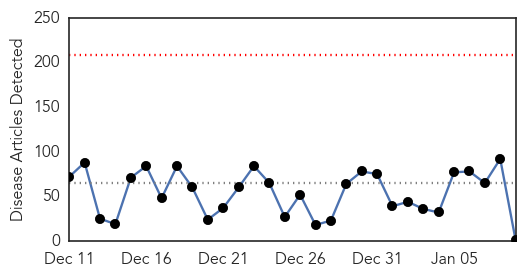

30 Day Trends
Web: 0 alerts, 0 warnings
Twitter: 0 alerts, 0 warnings
Top Articles:
Top Tweets:
- 0.920
- would most people know flu infection vs non-flu virus infection vs bacterial?
- 0.841
- RT: Have been in flu season for 7 weeks now. Still mostly H3N2 viruses; typically means a more severe season. Avg. flu seaso…
- 0.802
- Have been in flu season for 7 weeks now. Still mostly H3N2 viruses; typically means a more severe season. Avg. flu season about 13 weeks.
- 0.710
- Flu antivirals are underused. For high risk people treatment can mean difference between milder illness & hospital stay.
- 0.557
- Is it the flu or is it a cold? Symptoms such as fever body aches tiredness and cough are more common and intense with the flu.
- 0.509
- People should still get flu vaccination if they have not yet this season. Vaccination is the best way to prevent flu.
Web/News Articles
Tweets

Article Locations